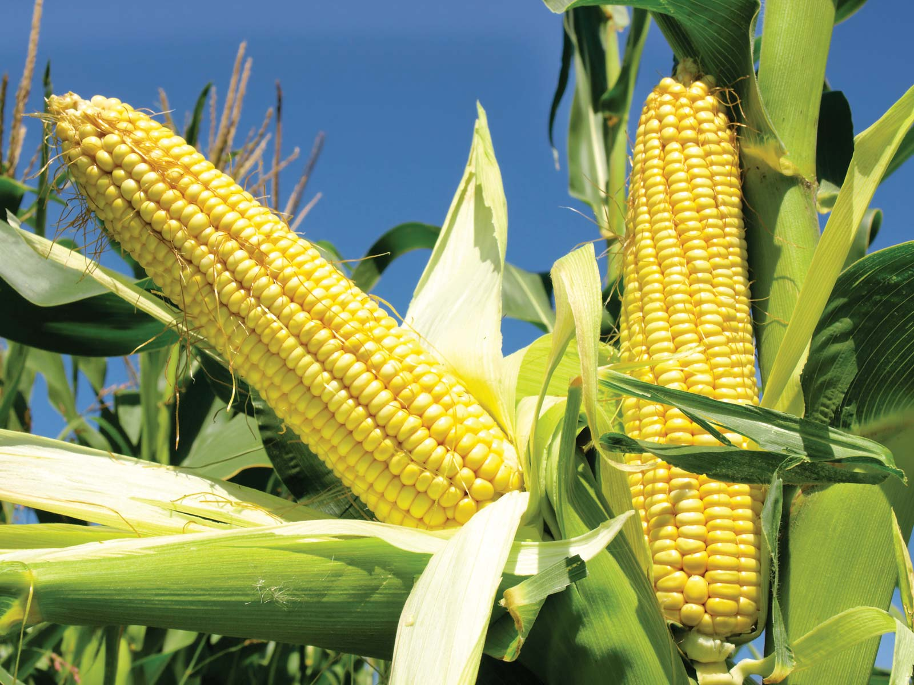
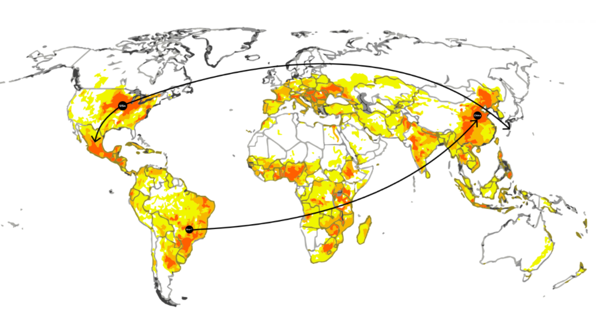

Definition

- Corn is one of the most widely grown crops in the world and takes up nearly one-third of U.S. cropland—an area equivalent to two Florida’s. In 2013, nearly three-quarters of the corn crop went either to feed animals or to fuel cars – just 10% was used for direct human consumption.
- The total production of corn in the US in 2019 is reported to be 13.016 billion bushels, of which the major use is for manufacture of ethanol Increasingly severe weather events and higher domestic and foreign demand for corn have contributed to a steady uptick and unprecedented volatility in corn prices, which ranged from $2 a bushel 10 years ago to a record $8 a bushel during the devastating 2012 drought.
- Genetically modified corn is made up 85% of the maize planted in the United States in 2009. Subsidies in the United States help to account for the high level of cultivation of maize in the United States and the fact that the U.S. is the world's largest maize producer.
- As a result of the government subsidies, corn is one of the crops grown in excess. Which has resulted in an overstock leading to ongoing research into finding new offsets for corn in various processed forms, such as ethanol and bioplastics.
Supply Chain Overview
- The USA is the largest producer of Corn in the world: 34% of all corn is grown in Ohio, Indiana, Illinois, Iowa, and Missouri. World corn trade is projected to increase by 34% between 2016 and 2026. U.S. exports are expected to increase by 17% by 2026, however much of that increase is due to low exports in 2015. Both Argentina and Brazil will increase exports through 2026. World soybean trade will increase by 24% between 2016 and 2026.
- China is expected to increase imports by 21% in 2026 from the 2015-2016 average. Argentina has been increasing soybean production rapidly due to restrictions on the exportation of beef and a reduction in soybean export taxes. Brazil will also continue to increase soybean exports to satisfy Chinese soybean demand. World corn production is expected to increase by 11%, from 31 billion bushels in 2015-2016 to 35 billion bushels in 2026.
- The United States will increase corn production by 6% while Argentina will increase production by 3.2%. Brazil is expected to increase corn production by 23.7% because of higher corn yields. The U.S. is projected to increase soybean production by about 6.5% by 2026. U.S. production growth is limited because of land constraints.
- Argentina and Brazil are expected to increase soybean production by 23.5% and 10.8%, respectively. U.S. corn yields are expected to increase in all states/regions except Minnesota because of record 2015 yields in that state. Harvested acres in the U.S. are expected to decrease slightly from 86.7 million acres in 2016 to 85.6 million acres in 2026.
- U.S. soybeans yields are expected to increase in most states/regions in the country. The multi-state West region has the largest corn harvested acres in the United States, followed by Iowa and Illinois.
Recent & Relevant News
- Environmental Impact: Although conventional corn production impacts the surrounding environment in similar ways, regulations and practices affect the amount of impact from one country to the other.
- Compared to the US, Brazil is currently suffering a much larger environmental impact with amount of forest being cleared in the Amazon for agricultural purposes.
Impacts of corn production:
- Soil depletion
- Fertilizer
- Water waste
- Water
- Contamination
- Air pollution
- Energy
- Transportation: trucks, rails, airplane.
Legal Issues & Major Controversies
- Poor laws and regulations allow for such practices and is greatly damaging the countries ecosystems. Feeding the world's growing population is one of the great challenges of the 21st century. This challenge is particularly pressing in China, which has 22% of the world's population but only 7% of the global cropland.
- Synthetic nitrogen fertilizer has been intensively used to boost crop yields in China, but more than 60% of it has been lost, causing severe environmental problems such as air pollution, eutrophication of lakes and rivers, and soil degradation.
Key Environmental and Social Issues of Corn Supply Chain:
- Water Use & Pollution
- Climate Change
- Land Use & Biodiversity
- Livelihoods of growers / farmers
- Land Rights
- Deforestation
- Working Conditions
Mapping the Supply Chain

- Since crop management varies with corn-farming location, this study selects specific corn-growing locations. The selected corn-farming locations represents a broad range of typical Corn Belt soil and climate conditions.
- Agricultural data (i.e., soil texture and climate) are available for each location, which is required in order to simulate soil carbon and nitrogen dynamics. Three counties in three different states in the Unites States : Freeborn MN, Hardin IA, Fulton IL :
- Agricultural production and food processing contribute significantly to environmental impacts on global warming, eutrophication and acidification . In the last decade, life cycle assessment (LCA) is increasingly used for the quantification of these impacts and to meet the demand for optimization of food production.
- For an environmental assessment of food products, the data demand comprises not only the agricultural primary production but also food processing, packaging, transport and waste management. Furthermore, a huge variability of agricultural practices exists within a country and to an even larger extent on a global scale.
Supplier Engagement Model
Production:
- Nitrogen fertilizer
- Large use of water for irrigation
- Use of Pesticides
- Loss of biodiversity due to monocrops
- Soil degradation
- GHG emissions from farming equipment
Processing:
- Excess Soil tillage
- GHG emissions from farming and factory equipment
- Large quantities of water for processing
- High energy consumption for processing.
- Air and water Pollution
- Process Chemicals & Detergents
- Large use of fossil fuels
- GHG emissions of all transportation methods
Distribution:
- GHG emissions of all transportation methods (trucks, trains, ships, cars, etc)
- High use of fossil fuels and non-renewable
- energy.
- Air, Water and Sound Pollution.
- Plastic Packaging & other materials for
- transportation
Consumer Use:
- GHG emissions of consumer travel to store
- High energy consumption to keep food in stores
- Packaging & food waste
Governance
- USDA- USGSA United States Grains Standards Act
- U.S Department of Labor
- National Association of State Departments of Agriculture (NASDA)
- Environmental Protection Agency (EPA) Standards and Regulations.
- Food and Agriculture Organization of the UN (FAO)
- The Sustainability Consortium
- UN Global Compact
- ISCC - International Sustainability & Carbon certification (Outside the US)
- ITC’s Trade for Sustainable Development Principles
Benchmarks
Image/Graph
Monitoring
- 3rd Party Audits (external risk assessment management companies)
- OECD
- Supplier Contract and agreements. Annual Evaluations and selected inspections of Growers compliance with environmental and social standards and policies.
- Monthly Corn Assessment Reports (state growers associations such as Missouri Department of Agriculture).
- International Labor Organization. (Human Rights and Child Labor Policies)
- Materiality Risk Assessment
- Improvement Plans and setting Company Goals
Verification
- ISO 26000 (Social Responsibility)
- Supplier Contract and agreements. Annual Evaluations and selected inspections of Growers compliance with environmental and social standards and policies.
- Monthly Corn Assessment Reports (state growers associations such as Missouri Department of Agriculture).
- International Labor Organization. (Human Rights and Child Labor Policies)
- Materiality Risk Assessment
- Improvement Plans and setting
- Company Goals
Reporting
- Environmental Policy
- Human Rights Policy
- Commitment to No-Deforestation
- Statement on Genetically
- Modified Organisms
- Statement on Animal Testing
- Commitment to Anti-Corruption Compliance
Life Cycle Assessments
- A LCA can help the industry of corn to be optimized on a sustainable way, where we can learn to reduce the impacts on the environment on the major contributors to this supply chain industry: reduce water waste, have an improvement on the irrigation system, better practices on fertilizers.
| Fossil fuel emisn Pesticides | Units MJ per Kg Corn grain | Conventional 0.1 | Organic 0.0 | GW ---------- | RW ---------- |
| Phosphorus | MJ per Kg Corn grain | 0.11 | 0.0 | ---------- | ---------- |
| Potassium | MJ per Kg Corn grain | 0.13 | 0.0 | ---------- | ---------- |
| Nitrogen | MJ per Kg Corn grain | 0.58 | 0.0 | ---------- | ---------- |
| Drying corn | MJ per Kg Corn grain | 0.6 | 0.6 | ---------- | ---------- |
| Global Warming | kg CO2-eq/kg | ------------- | ------------- | 0.44 | 0.37 |
| Transportation | MJ per Kg Corn grain | 0.1 | 0.12 | ---------- | ---------- |
| Ozone depletion | kg CFC11-eq/kg | ----------- | ------------- | 4.3×10−8 | 4.4×10−8 |
Other Challenges & Impacts
- The water footprint varies from country to country. Maize (corn) from the USA has an average water footprint of 760 litre/kg, maize from China 1160 litre/kg, maize from Brazil 1750 litre/kg and maize from India 2540 litre/kg.
- In the period 1996-2005, global maize production contributed 10% to the total water footprint of crop production in the world. The USA, China and Brazil contributed 25, 18 and 8% to the total water footprint of maize production (Mekonnen and Hoekstra, 2010, 2011).
Innovations
Companies like Agrinos are creating sustainable ways to produce a greater yield of crops while reducing the overall environmental footprint:
Image
Some large companies such as ADM and Bunge are just beginning to engage in more alternative and sustainable supply chains:
Image
Conclusions
Recommendations for process improvements:
- Extend Crop Rotation
- Better Tillage Management. Recovery of Healthy Topsoil
- Cover Crops + Multi-Crop farming. (Implement Permaculture practices)
- Drainage Water Management (Avoid Runoff into waterways)
- Improved Nitrogen Management (reduced use of harmful fertilizers)
- Non-GMO and Non- Pesticide Treatment. (Organic Farming methods)
- Use of renewable energy and recycled water during harvesting and processing Transition to electrically powered machinery
- Anti-deforestation practices
- Carbon capture and Storage
- Investigating ways to reduce energy usage
- Reduce waste during processing
- Use of renewable energy
- Research and utilize more environmentally friendly detergents to help reduce negative ecosystem impacts
- More efficient equipment
- Substitute renewable energy for fossil energy
- Change agronomic practices